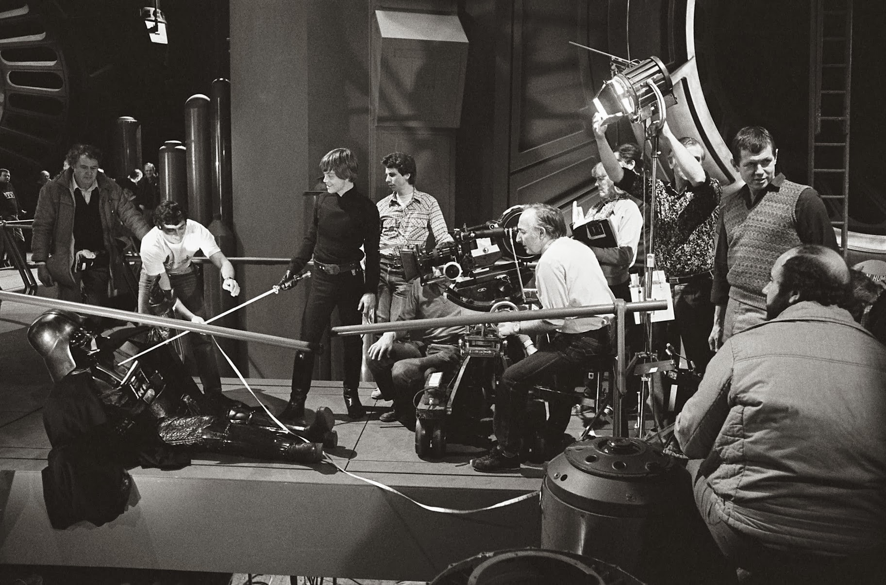

Dirección y Producción
Detrás del universo de Star Wars hay una visión clara impulsada por su creador, George Lucas, quien no solo dirigió la primera película en 1977, sino que también sentó las bases de una forma completamente nueva de hacer cine. Su enfoque combinó narrativa clásica con tecnología innovadora, apostando por una producción ambiciosa que en su momento parecía imposible de realizar.
A lo largo de las distintas trilogías, la dirección fue pasando por diferentes manos, manteniendo siempre una identidad coherente. Equipos de producción, diseñadores y técnicos trabajaron en conjunto para construir mundos, personajes y escenarios que se sintieran reales. Esta coordinación entre dirección y producción fue clave para lograr una saga que no solo marcó a generaciones, sino que también redefinió los estándares de la industria cinematográfica.